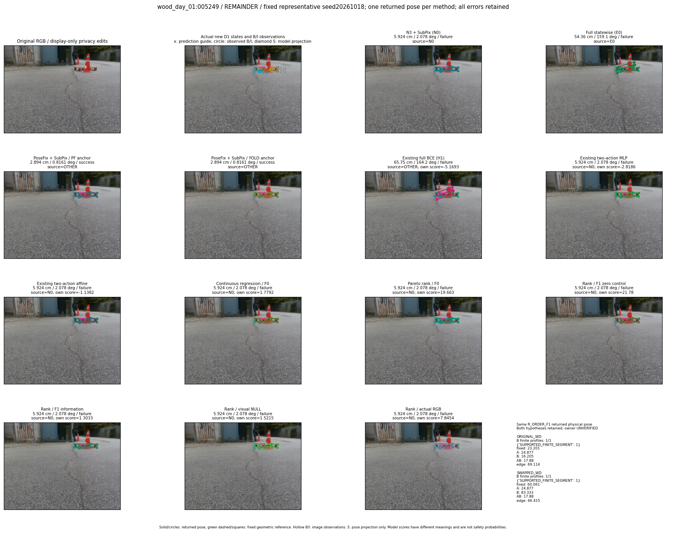
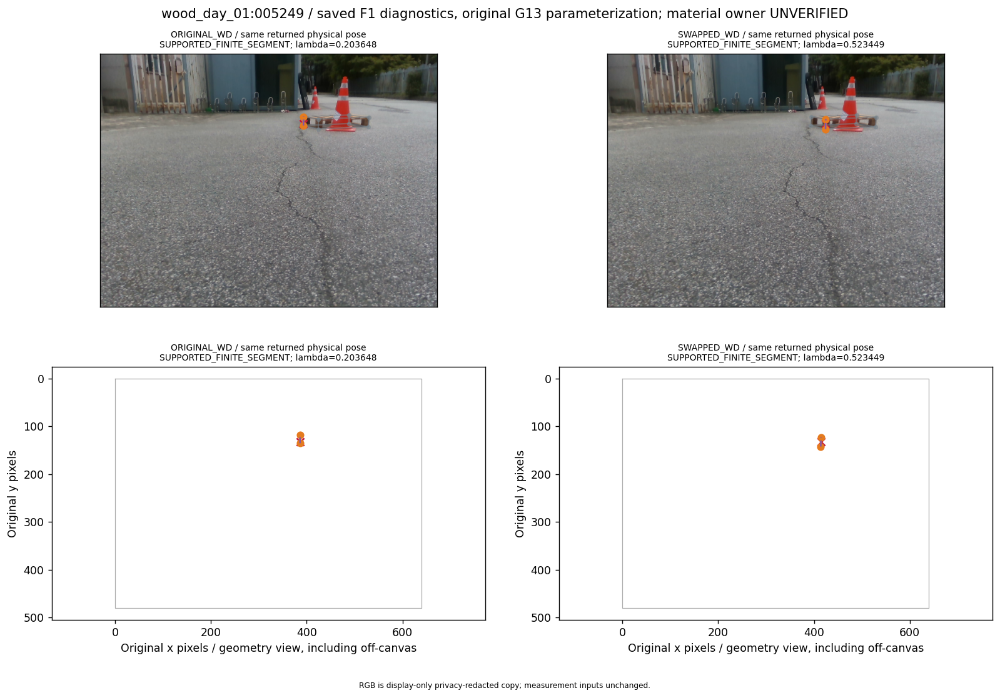
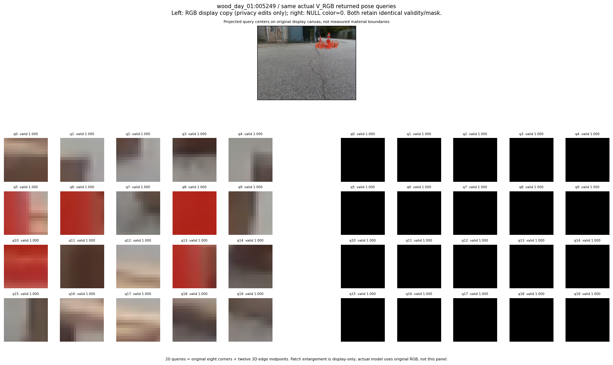

R_CONT_F0_s20261018:rotation_improvement · R_ORDER_F0_s20261018:rotation_improvement · R_ORDER_F1_ZERO_s20261018:rotation_improvement · R_ORDER_F1_s20261018:rotation_improvement · V_ORDER_NULL_s20261018:rotation_improvement · V_ORDER_RGB_s20261018:rotation_improvement
thumbnail detail support visual



실선은 반환 자세, 초록 점선은 고정 기하 참조입니다. S는 영상 관측이 아닙니다. 점수는 모델별 의미가 다르며 보정된 안전 확률이 아닙니다. 개인정보 처리는 표시 사본에만 적용했습니다.
| 방법·seed | 위치 / 회전 / 공동성공 | 실제 출처 | 선택 후보 | 각 모델 자체 점수 |
|---|---|---|---|---|
| N0 | 5.924 cm / 2.078 deg / failure | N0 | N/A | N/A |
| E0 | 54.36 cm / 159.1 deg / failure | E0 | N/A | N/A |
| E0_REGENERATED | 54.36 cm / 159.1 deg / failure | E0 | E0_REGENERATED | N/A |
| POSEFIX_SUBPIX_PF_ANCHOR | 2.894 cm / 0.8161 deg / success | OTHER | N/A | N/A |
| POSEFIX_SUBPIX_YOLO_ANCHOR | 2.894 cm / 0.8161 deg / success | OTHER | N/A | N/A |
| D1_H1_MLP_s20261018 | 65.75 cm / 164.2 deg / failure | OTHER | G13/SWAPPED_WD/selected | -5.169295787811279 |
| D1_H1_MLP_s20261019 | 65.75 cm / 164.2 deg / failure | OTHER | G13/SWAPPED_WD/selected | -4.774541854858398 |
| D1_H1_MLP_s20261020 | 5.924 cm / 2.078 deg / failure | N0 | N0 | -4.497997283935547 |
| D1_H1_PAIR_MLP_s20261018 | 5.924 cm / 2.078 deg / failure | N0 | N0 | -2.8185529708862305 |
| D1_H1_PAIR_MLP_s20261019 | 5.924 cm / 2.078 deg / failure | N0 | N0 | -2.508561849594116 |
| D1_H1_PAIR_MLP_s20261020 | 5.924 cm / 2.078 deg / failure | N0 | N0 | -3.1510818004608154 |
| D1_H1_PAIR_ROLE_AFFINE_s20261018 | 5.924 cm / 2.078 deg / failure | N0 | N0 | -1.13823401927948 |
| D1_H1_PAIR_ROLE_AFFINE_s20261019 | 5.924 cm / 2.078 deg / failure | N0 | N0 | -1.5406520366668701 |
| D1_H1_PAIR_ROLE_AFFINE_s20261020 | 5.924 cm / 2.078 deg / failure | N0 | N0 | -1.3077867031097412 |
| R_CONT_F0_s20261018 | 5.924 cm / 2.078 deg / failure | N0 | N0 | 1.779226303100586 |
| R_CONT_F0_s20261019 | 5.924 cm / 2.078 deg / failure | N0 | N0 | 1.8844959735870361 |
| R_CONT_F0_s20261020 | 5.924 cm / 2.078 deg / failure | N0 | N0 | 1.8014638423919678 |
| R_ORDER_F0_s20261018 | 5.924 cm / 2.078 deg / failure | N0 | N0 | 19.663394927978516 |
| R_ORDER_F0_s20261019 | 5.924 cm / 2.078 deg / failure | N0 | N0 | 16.215147018432617 |
| R_ORDER_F0_s20261020 | 5.924 cm / 2.078 deg / failure | N0 | N0 | -10.136720657348633 |
| R_ORDER_F1_ZERO_s20261018 | 5.924 cm / 2.078 deg / failure | N0 | N0 | 21.780466079711914 |
| R_ORDER_F1_ZERO_s20261019 | 5.924 cm / 2.078 deg / failure | N0 | N0 | 28.050691604614258 |
| R_ORDER_F1_ZERO_s20261020 | 5.924 cm / 2.078 deg / failure | N0 | N0 | 18.789546966552734 |
| R_ORDER_F1_s20261018 | 5.924 cm / 2.078 deg / failure | N0 | N0 | 1.3033244609832764 |
| R_ORDER_F1_s20261019 | 5.924 cm / 2.078 deg / failure | N0 | N0 | 4.401010513305664 |
| R_ORDER_F1_s20261020 | 5.924 cm / 2.078 deg / failure | N0 | N0 | 3.3085243701934814 |
| V_ORDER_NULL_s20261018 | 5.924 cm / 2.078 deg / failure | N0 | N0 | 1.5214709043502808 |
| V_ORDER_NULL_s20261019 | 5.924 cm / 2.078 deg / failure | N0 | N0 | 1.422995686531067 |
| V_ORDER_NULL_s20261020 | 5.924 cm / 2.078 deg / failure | N0 | N0 | 7.100289344787598 |
| V_ORDER_RGB_s20261018 | 5.924 cm / 2.078 deg / failure | N0 | N0 | 7.845398902893066 |
| V_ORDER_RGB_s20261019 | 5.924 cm / 2.078 deg / failure | N0 | N0 | 2.2484753131866455 |
| V_ORDER_RGB_s20261020 | 5.924 cm / 2.078 deg / failure | N0 | N0 | -5.5553741455078125 |